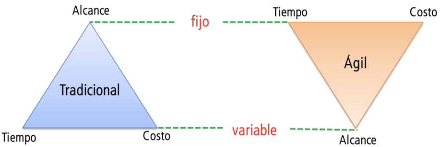

Agile
El triángulo de hierro

Valores del manifiesto ágil
Individuos e interacciones sobre procesos y herramientas
Software funcionando sobre documentación extensiva
Colaboración con el cliente sobre negociación contractual
Respuesta ante el cambio sobre seguir un plan
Esto es, aunque valoramos los elementos de la derecha, valoramos más los de la izquierda.
Principios del manifiesto ágil
Elijo algunos de los 12 principios:
- El método más eficiente y efectivo de comunicar información entre el equipos y sus miembros es la comunicación cara a cara (mayor Ancho de Banda).
- Los procesos Ágiles promueven el desarrollo sostenible -> mantener un ritmo constante de forma indefinida.
- Es esencial la simplicidad -> el arte de maximizar la cantidad de trabajo no realizado.
- El equipo reflexiona a intervalos regulares para cambiar su comportamiento en base a lo aprendido.
Prácticas y metodologías ágiles
Maximizar el valor
- Planificación en términos de producto
- Priorización en base a valor
- Colaboración con el cliente
- Visibilidad del proceso
- Detectar y eliminar desperdicio
Desarrollo iterativo e incremental
Agile != Scrum
- 4 people in the room (Cockburn)
- Extreme Programming
- Kanban
- Crystal
- Scrum

Scrum

Panel de scrum (artefacto)
| To-Do | Doing | Done |
|---|---|---|
XP
"El problema básico del desarrollo de software es el riesgo." – Kent Beck
- Evitar riesgos de software
- Acortar el ciclo de feedback:
- Con compañeros (programando)
- Con clientes (features)
- Con usuarios (a producción)

¿Para qué XP?
-
Calidad -
Código limpio -
Profesionalidad -
Hacer lo correcto -
Economics
-
Felicidad